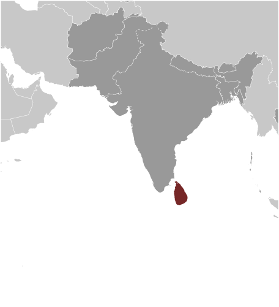
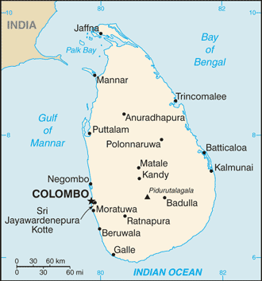
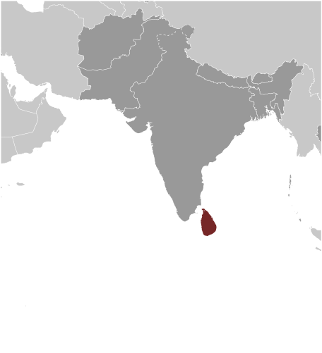
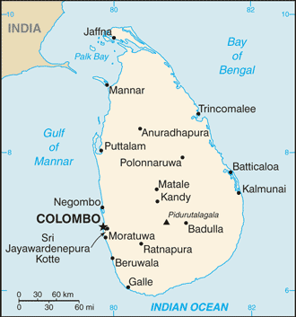

South Asia :: SRI LANKA
Introduction :: SRI LANKA
-
The first Sinhalese arrived in Sri Lanka late in the 6th century B.C., probably from northern India. Buddhism was introduced circa 250 B.C., and the first kingdoms developed at the cities of Anuradhapura (from circa 200 B.C. to circa A.D. 1000) and Polonnaruwa (from about 1070 to 1200). In the 14th century, a south Indian dynasty established a Tamil kingdom in northern Sri Lanka. The Portuguese controlled the coastal areas of the island in the 16th century and the Dutch in the 17th century. The island was ceded to the British in 1796, became a crown colony in 1802, and was formally united under British rule by 1815. As Ceylon, it became independent in 1948; its name was changed to Sri Lanka in 1972. Prevailing tensions between the Sinhalese majority and Tamil separatists erupted into war in 1983. After two decades of fighting, the government and Liberation Tigers of Tamil Eelam (LTTE) formalized a cease-fire in February 2002 with Norway brokering peace negotiations. Both the LTTE and the government unofficially abrogated the ceasefire and violence between the LTTE and government forces intensified in 2006, but the government regained control of the Eastern Province in 2007. The government officially withdrew from the ceasefire agreement in January 2008 and by May 2009, the remnants of the LTTE had been defeated.Since the end of the conflict, the government has enacted an ambitious program of economic development projects, many of which are financed by loans from the Government of China. In addition to efforts at reconstructing its economy, the government has resettled more than 95% of those civilians displaced during the final phase of the conflict and released the vast majority of former LTTE combatants captured by Government Security Forces. Progress continues to be made on more contentious and politically difficult issues such as reaching a political settlement with Tamil elected representatives and holding accountable those alleged to have been involved in human rights violations and other abuses during the conflict.
Geography :: SRI LANKA
-
Southern Asia, island in the Indian Ocean, south of India7 00 N, 81 00 EAsiatotal: 65,610 sq kmland: 64,630 sq kmwater: 980 sq kmcountry comparison to the world: 123slightly larger than West Virginia0 km1,340 kmterritorial sea: 12 nmcontiguous zone: 24 nmexclusive economic zone: 200 nmcontinental shelf: 200 nm or to the edge of the continental margintropical monsoon; northeast monsoon (December to March); southwest monsoon (June to October)mostly low, flat to rolling plain; mountains in south-central interiormean elevation: 228 melevation extremes: lowest point: Indian Ocean 0 mhighest point: Pidurutalagala 2,524 mlimestone, graphite, mineral sands, gems, phosphates, clay, hydropower, arable landagricultural land: 43.5%arable land 20.7%; permanent crops 15.8%; permanent pasture 7%forest: 29.4%other: 27.1% (2011 est.)5,700 sq km (2012)the population is primarily concentrated within a broad wet zone in the southwest, urban centers along the eastern coast, and on the Jaffna Peninsula in the northoccasional cyclones and tornadoesdeforestation; soil erosion; wildlife populations threatened by poaching and urbanization; coastal degradation from mining activities and increased pollution; freshwater resources being polluted by industrial wastes and sewage runoff; waste disposal; air pollution in Colomboparty to: Biodiversity, Climate Change, Climate Change-Kyoto Protocol, Desertification, Endangered Species, Environmental Modification, Hazardous Wastes, Law of the Sea, Ozone Layer Protection, Ship Pollution, Wetlandssigned, but not ratified: Marine Life Conservationstrategic location near major Indian Ocean sea lanes; Adam's Bridge is a chain of limestone shoals between the southeastern coast of India and the northwestern coast of Sri Lanka; geological evidence suggests that this 50-km long bridge once connected India and Sri Lanka; ancient records seem to indicate that a foot passage was possible between the two land masses until the 15th century when the land bridge broke up in a cyclone
People and Society :: SRI LANKA
-
22,409,381 (July 2017 est.)country comparison to the world: 57noun: Sri Lankan(s)adjective: Sri LankanSinhalese 74.9%, Sri Lankan Tamil 11.2%, Sri Lankan Moors 9.2%, Indian Tamil 4.2%, other 0.5% (2012 est.)Sinhala (official and national language) 74%, Tamil (official and national language) 18%, other 8%note: English, spoken competently by about 10% of the population, is commonly used in government and is referred to as the link language in the constitutionBuddhist (official) 70.2%, Hindu 12.6%, Muslim 9.7%, Roman Catholic 6.1%, other Christian 1.3%, other 0.05% (2012 est.)0-14 years: 24.06% (male 2,750,004/female 2,642,606)15-24 years: 14.63% (male 1,666,859/female 1,611,379)25-54 years: 41.58% (male 4,571,200/female 4,747,119)55-64 years: 10.06% (male 1,043,199/female 1,210,930)65 years and over: 9.67% (male 917,014/female 1,249,071) (2017 est.)total dependency ratio: 51.2youth dependency ratio: 37.2elderly dependency ratio: 14.1potential support ratio: 7.1 (2015 est.)total: 32.8 yearsmale: 31.5 yearsfemale: 34 years (2017 est.)country comparison to the world: 950.76% (2017 est.)country comparison to the world: 13715.2 births/1,000 population (2017 est.)country comparison to the world: 1266.2 deaths/1,000 population (2017 est.)country comparison to the world: 153-1.3 migrant(s)/1,000 population (2017 est.)country comparison to the world: 145the population is primarily concentrated within a broad wet zone in the southwest, urban centers along the eastern coast, and on the Jaffna Peninsula in the northurban population: 18.5% of total population (2017)rate of urbanization: 1.11% annual rate of change (2015-20 est.)Sri Jayewardenepura Kotte (legislative capital) 128,000 (2014); COLOMBO (capital) 707,000 (2015)at birth: 1.04 male(s)/female0-14 years: 1.04 male(s)/female15-24 years: 1.03 male(s)/female25-54 years: 0.96 male(s)/female55-64 years: 0.86 male(s)/female65 years and over: 0.74 male(s)/femaletotal population: 0.96 male(s)/female (2016 est.)25.4 yearsnote: median age at first birth among women 30-34 (2006/07 est.)30 deaths/100,000 live births (2015 est.)country comparison to the world: 114total: 8.4 deaths/1,000 live birthsmale: 9.3 deaths/1,000 live birthsfemale: 7.4 deaths/1,000 live births (2017 est.)country comparison to the world: 150total population: 76.9 yearsmale: 73.5 yearsfemale: 80.6 years (2017 est.)country comparison to the world: 822.07 children born/woman (2017 est.)country comparison to the world: 1113.5% of GDP (2014)country comparison to the world: 1730.73 physicians/1,000 population (2010)3.6 beds/1,000 population (2012)improved:urban: 98.5% of populationrural: 95% of populationtotal: 95.6% of populationunimproved:urban: 1.5% of populationrural: 5% of populationtotal: 4.4% of population (2015 est.)improved:urban: 88.1% of populationrural: 96.7% of populationtotal: 95.1% of populationunimproved:urban: 11.9% of populationrural: 3.3% of populationtotal: 4.9% of population (2015 est.)<.1% (2016 est.)4,000 (2016 est.)country comparison to the world: 108<200 (2016 est.)degree of risk: highfood or waterborne diseases: bacterial diarrhea and hepatitis Avectorborne disease: dengue feverwater contact disease: leptospirosisanimal contact disease: rabies (2016)5.2% (2016)country comparison to the world: 18226.3% (2012)country comparison to the world: 232.2% of GDP (2015)country comparison to the world: 168definition: age 15 and over can read and writetotal population: 92.6%male: 93.6%female: 91.7% (2015 est.)total: 14 yearsmale: 14 yearsfemale: 14 years (2013)total: 20.7%male: 16.5%female: 27.3% (2015 est.)country comparison to the world: 69
Government :: SRI LANKA
-
conventional long form: Democratic Socialist Republic of Sri Lankaconventional short form: Sri Lankalocal long form: Shri Lanka Prajatantrika Samajavadi Janarajaya/Ilankai Jananayaka Choshalichak Kutiyarachulocal short form: Shri Lanka/Ilankaiformer: Serendib, Ceylonetymology: the name means "resplendent island" in Sanskritpresidential republicname: Colombo (commercial capital); Sri Jayewardenepura Kotte (administrative capital)geographic coordinates: 6 55 N, 79 50 Etime difference: UTC+5.5 (10.5 hours ahead of Washington, DC, during Standard Time)9 provinces; Central, Eastern, North Central, Northern, North Western, Sabaragamuwa, Southern, Uva, Western4 February 1948 (from the UK)Independence Day (National Day), 4 February (1948)history: several previous; latest adopted 16 August 1978, certified 31 August 1978amendments: proposed by Parliament; passage requires at least two-thirds majority vote of its total membership, certification by the president of the republic or the Parliament speaker, and approval in a referendum by an absolute majority of valid votes; amended many times, last in 2015 (2017)mixed legal system of Roman-Dutch civil law, English common law, and Jaffna Tamil customary lawhas not submitted an ICJ jurisdiction declaration; non-party state to the ICCtcitizenship by birth: nocitizenship by descent only: at least one parent must be a citizen of Sri Lankadual citizenship recognized: no, except in cases where the government rules it is to the benefit of Sri Lankaresidency requirement for naturalization: 7 years18 years of age; universalchief of state: President Maithripala SIRISENA (since 9 January 2015); note - the president is both chief of state and head of government; Ranil WICKREMESINGHE (since 9 January 2015) holds the title of prime ministerhead of government: President Maithripala SIRISENA (since 9 January 2015)cabinet: Cabinet appointed by the president in consultation with the prime ministerelections/appointments: president directly elected by preferential majority popular vote for a 5-year term (eligible for a second term); election last held on 8 January 2015 (next to be held by January 2021); note - the January 2015 election was held nearly 2 years ahead of scheduleelection results: Maithripala SIRISENA elected president; percent of vote - Maithripala SIRISENA (SLFP) 51.3%, Mahinda RAJAPAKSA (SLFP) 47.6%, other 1.1%description: unicameral Parliament (225 seats; 196 members directly elected in multi-seat constituencies by proportional representation vote using a preferential method in which voters select 3 candidates in order of preference; remaining 29 seats allocated to other political parties and groups in proportion to share of national vote; members serve 5-year terms)elections: last held on 17 August 2015 following President SIRISENA's dissolution of Parliament in late June 2015 in an effort to consolidate power and pass reforms (next to be held in 2020)election results: percent of vote by coalition/party - EYJP 45.7%, UPFA 42.4%, JVP 4.9%, TNA 4.6%, SLMC 0.4%, EPDP 0.3% other 1.7%; seats by coalition/party EYJP 106, UPFA 95, TNA 16, JVP 6, SLMC 1, EPDP 1highest court(s): Supreme Court of the Republic (consists of the chief justice and 9 justices); note - the court has exclusive jurisdiction to review legislationjudge selection and term of office: chief justice nominated by the Constitutional Council (CC), a 9-member high-level advisory body, and appointed by the president; other justices nominated by the CC and appointed by the president on the advice of the chief justice; all justices can serve until age 65subordinate courts: Court of Appeals; High Courts; Magistrates' Courts; municipal and primary courtsEelam People's Democratic Party or EPDP [Douglas DEVANANDA]Janatha Vimukthi Peramuna or JVP [Anura Kumara DISSANAYAKE]Jathika Hela Urumaya or JHU [Karunarathna PARANAWITHANA and Ven Hadigalle WIMALASARA THERO]New Democratic Front or NDF [Shalila MOONESINGHE]Sri Lanka Freedom Party or SLFP [Maithripala SIRISENA]Sri Lanka Muslim Congress or SLMC [Rauff HAKEEM]Tamil National Alliance or TNA [Rajavarothiam SAMPANTHAN] (alliance includes Eelam People's Revolutionary Liberation Front [Suresh PREMACHANDRAN], Illankai Tamil Arasu Kachchi Mavai SENATHIRAJAH], People's Liberation Organisation of Tamil Eelam [D. SIDDARTHAN], Tamil Eelam Liberation Organization Selvam ADAIKALANATHAN])United National Front for Good Governance or EYJP [Ranil WICKREMESINGHE] (coalition includes JHU, UNP)United National Party or UNP [Ranil WICKREMESINGHE]United People's Freedom Alliance or UPFA [Maithripala SIRISENA] (coalition includes SLFP)Buddhist clergySinhalese Buddhist lay groupsdiaspora groupsother: labor unions; hardline nationalist Sinhalese groups, such as the National Movement Against TerrorismABEDA, ADB, ARF, BIMSTEC, C, CD, CICA (observer), CP, FAO, G-11, G-15, G-24, G-77, IAEA, IBRD, ICAO, ICC (national committees), ICRM, IDA, IFAD, IFC, IFRCS, IHO, ILO, IMF, IMO, IMSO, Interpol, IOC, IOM, IPU, ISO, ITSO, ITU, ITUC (NGOs), MIGA, MINURSO, MINUSTAH, MONUSCO, NAM, OAS (observer), OPCW, PCA, SAARC, SACEP, SCO (dialogue member), UN, UNCTAD, UNESCO, UNIDO, UNIFIL, UNISFA, UNMISS, UNWTO, UPU, WCO, WFTU (NGOs), WHO, WIPO, WMO, WTOchief of mission: Ambassador Prasad KARIYAWASAM (since 14 July 2014)chancery: 3025 Whitehaven Street NW, Washington, DC 20008telephone: [1] (202) 483-4025 through 4028FAX: [1] (202) 232-7181consulate(s) general: Los Angeles, New Yorkchief of mission: Ambassador Atul KESHAP (since 21 August 2015); note - also accredited to Maldivesembassy: 210 Galle Road, Colombo 3mailing address: P. O. Box 106, Colombotelephone: [94] (11) 249-8500FAX: [94] (11) 243-7345yellow with two panels; the smaller hoist-side panel has two equal vertical bands of green (hoist side) and orange; the other larger panel depicts a yellow lion holding a sword on a maroon rectangular field that also displays a yellow bo leaf in each corner; the yellow field appears as a border around the entire flag and extends between the two panels; the lion represents Sinhalese ethnicity, the strength of the nation, and bravery; the sword demonstrates the sovereignty of the nation; the four bo leaves - symbolizing Buddhism and its influence on the country - stand for the four virtues of kindness, friendliness, happiness, and equanimity; orange signifies Sri Lankan Tamils, green Sri Lankan Moors, and maroon the Sinhalese majority; yellow denotes other ethnic groups; also referred to as the Lion Flaglion, water lily; national colors: maroon, yellowname: "Sri Lanka Matha" (Mother Sri Lanka)lyrics/music: Ananda SAMARKONEnote: adopted 1951
Economy :: SRI LANKA
-
Sri Lanka is attempting to sustain economic growth while maintaining macroeconomic stability under an IMF program. The government's high debt payments and bloated civil service cadre, which have contributed to historically high budget deficits and low tax revenues, remain a concern. Government debt is about 77% of GDP and remains among the highest of the emerging markets.The new government in 2015 drastically increased wages for public sector employees, which boosted demand for consumer goods but hurt the overall balance of payments and reduced foreign exchange reserves.Tourism has experienced strong growth during recent years following the resolution of the government's 26-year conflict with the Liberation Tigers of Tamil Eelam. The government has been pursuing large-scale reconstruction and development projects in its efforts to spur growth.$261.1 billion (2016 est.)$247 billion (2015 est.)$233 billion (2014 est.)note: data are in 2016 dollarscountry comparison to the world: 62$80.52 billion (2016 est.)4.4% (2016 est.)4.8% (2015 est.)5% (2014 est.)country comparison to the world: 52$12,300 (2016 est.)$11,800 (2015 est.)$11,400 (2014 est.)note: data are in 2016 dollarscountry comparison to the world: 12429% of GDP (2016 est.)26.1% of GDP (2015 est.)29.8% of GDP (2014 est.)country comparison to the world: 27household consumption: 67.6%government consumption: 8.6%investment in fixed capital: 27.6%investment in inventories: 3.9%exports of goods and services: 21.4%imports of goods and services: -29.1% (2016 est.)agriculture: 8.2%industry: 30.6%services: 62.6% (2016 est.)rice, sugarcane, grains, pulses, oilseed, spices, vegetables, fruit, tea, rubber, coconuts; milk, eggs, hides, beef; fishprocessing of rubber, tea, coconuts, tobacco and other agricultural commodities; telecommunications, insurance, banking; tourism, shipping; clothing, textiles; cement, petroleum refining, information technology services, construction6.7% (2016 est.)country comparison to the world: 278.805 million (2016 est.)country comparison to the world: 57agriculture: 28.4%industry: 25.7%services: 45.9% (30 Jun 2015)4% (2016 est.)4.3% (2015 est.)country comparison to the world: 576.7% (2012 est.)lowest 10%: 1.6%highest 10%: 39.5% (2009)49 (2010)46 (1995)country comparison to the world: 20revenues: $11.63 billionexpenditures: $16.03 billion (2016 est.)14.1% of GDP (2016 est.)country comparison to the world: 197-5.3% of GDP (2016 est.)country comparison to the world: 16079.3% of GDP (2016 est.)77.6% of GDP (2015 est.)note: covers central government debt, and excludes debt instruments directly owned by government entities other than the treasury (e.g. commercial bank borrowings of a government corporation); the data includes treasury debt held by foreign entities as well as intra-governmental debt; intra-governmental debt consists of treasury borrowings from surpluses in the social funds, such as for retirement; sub-national entities are usually not permitted to sell debt instrumentscountry comparison to the world: 38calendar year4% (2016 est.)2.2% (2015 est.)country comparison to the world: 1627% (30 September 2016)6% (31 December 2015)country comparison to the world: 5010.49% (31 December 2016 est.)6.96% (31 December 2015 est.)country comparison to the world: 77$5.184 billion (31 December 2016 est.)$4.963 billion (31 December 2015 est.)country comparison to the world: 98$32.2 billion (31 December 2016 est.)$28.16 billion (31 December 2015 est.)country comparison to the world: 77$46.21 billion (31 December 2016 est.)$39.22 billion (31 December 2015 est.)country comparison to the world: 68$20.8 billion (31 December 2015 est.)$23.67 billion (31 December 2014 est.)$18.81 billion (31 December 2013 est.)country comparison to the world: 65$-1.942 billion (2016 est.)$-1.883 billion (2015 est.)country comparison to the world: 152$10.31 billion (2016 est.)$10.55 billion (2015 est.)country comparison to the world: 87textiles and apparel, tea and spices; rubber manufactures; precious stones; coconut products, fishUS 27.3%, UK 10.2%, India 7.3%, Germany 5%, Italy 4.2% (2016)$19.4 billion (2016 est.)$18.93 billion (2015 est.)country comparison to the world: 73petroleum, textiles, machinery and transportation equipment, building materials, mineral products, foodstuffsIndia 21.7%, China 12.1%, UAE 6.1%, Singapore 5.9%, Japan 5.4% (2016)$6.019 billion (31 December 2016 est.)$7.303 billion (31 December 2015 est.)country comparison to the world: 89$45.26 billion (31 December 2016 est.)$43.92 billion (31 December 2015 est.)country comparison to the world: 65$NA$NASri Lankan rupees (LKR) per US dollar -145.58 (2016 est.)145.58 (2015 est.)135.86 (2014 est.)130.57 (2013 est.)127.6 (2012 est.)
Energy :: SRI LANKA
-
population without electricity: 1,334,100electrification - total population: 94%electrification - urban areas: 99%electrification - rural areas: 93% (2013)12.64 billion kWh (2015 est.)country comparison to the world: 9211.72 billion kWh (2015 est.)country comparison to the world: 870 kWh (2016 est.)country comparison to the world: 1180 kWh (2016 est.)country comparison to the world: 1324.056 million kW (2015 est.)country comparison to the world: 8855.3% of total installed capacity (2015 est.)country comparison to the world: 1410% of total installed capacity (2015 est.)country comparison to the world: 6341.1% of total installed capacity (2015 est.)country comparison to the world: 483.6% of total installed capacity (2015 est.)country comparison to the world: 1060 bbl/day (2016 est.)country comparison to the world: 1180 bbl/day (2014 est.)country comparison to the world: 10436,480 bbl/day (2014 est.)country comparison to the world: 590 bbl (1 January 2017 es)country comparison to the world: 11835,650 bbl/day (2014 est.)country comparison to the world: 85103,000 bbl/day (2015 est.)country comparison to the world: 80472.9 bbl/day (2014 est.)country comparison to the world: 11260,840 bbl/day (2014 est.)country comparison to the world: 740 cu m (2013 est.)country comparison to the world: 1190 cu m (2013 est.)country comparison to the world: 1670 cu m (2013 est.)country comparison to the world: 810 cu m (2013 est.)country comparison to the world: 1040 cu m (1 January 2014 es)country comparison to the world: 12516 million Mt (2013 est.)country comparison to the world: 89
Communications :: SRI LANKA
-
total subscriptions: 2,479,802subscriptions per 100 inhabitants: 11 (July 2016 est.)country comparison to the world: 52total: 25,797,199subscriptions per 100 inhabitants: 116 (July 2016 est.)country comparison to the world: 55general assessment: telephone services have improved significantly and are available in most parts of the countrydomestic: national trunk network consists mostly of digital microwave radio relay; fiber-optic links now in use in Colombo area and fixed wireless local loops have been installed; competition is strong in mobile cellular systems and mobile cellular subscribership is increasinginternational: country code - 94; the SEA-ME-WE-3 and SEA-ME-WE-4 submarine cables provide connectivity to Asia, Australia, Middle East, Europe, US; satellite earth stations - 2 Intelsat (Indian Ocean) (2016)government operates 5 TV channels and 19 radio channels; multi-channel satellite and cable TV subscription services available; 25 private TV stations and about 43 radio stations; 6 non-profit TV stations and 4 radio stations (2017).lktotal: 7,126,540percent of population: 32.1% (July 2016 est.)country comparison to the world: 74
Transportation :: SRI LANKA
-
number of registered air carriers: 3inventory of registered aircraft operated by air carriers: 25annual passenger traffic on registered air carriers: 4,911,730annual freight traffic on registered air carriers: 381,381,300 mt-km (2015)4R (2016)19 (2013)country comparison to the world: 137total: 15over 3,047 m: 21,524 to 2,437 m: 6914 to 1,523 m: 7 (2013)total: 4914 to 1,523 m: 1under 914 m: 3 (2013)1 (2013)total: 1,447 kmbroad gauge: 1,447 km 1.676-m gauge (2014)country comparison to the world: 80total: 114,093 kmpaved: 16,977 kmunpaved: 97,116 km (2010)country comparison to the world: 42160 km (primarily on rivers in southwest) (2012)country comparison to the world: 100total: 21by type: bulk carrier 4, cargo 13, chemical tanker 1, container 1, petroleum tanker 2foreign-owned: 8 (Germany 8) (2010)country comparison to the world: 94major seaport(s): Colombocontainer port(s) (TEUs): Colombo (3,651,963)
Military and Security :: SRI LANKA
-
2.44% of GDP (2016)2.55% of GDP (2015)2.41% of GDP (2014)2.15% of GDP (2013)2.16% of GDP (2012)country comparison to the world: 29Sri Lanka Army, Sri Lanka Navy (includes Marine Corps), Sri Lanka Air Force, Sri Lanka Coast Guard (2016)18-22 years of age for voluntary military service; no conscription; 5-year service obligation (Air Force) (2012)
Transnational Issues :: SRI LANKA
-
noneIDPs: 44,000 (civil war; more than half displaced prior to 2008; many of the more than 480,000 IDPs registered as returnees have not reached durable solutions) (2016)current situation: Sri Lanka is primarily a source and, to a lesser extent, a destination country for men, women, and children subjected to forced labor and sex trafficking; some Sri Lankan adults and children who migrate willingly to the Middle East, Southeast Asia, and Afghanistan to work in the construction, garment, and domestic service sectors are subsequently subjected to forced labor or debt bondage (incurred through high recruitment fees or money advances); some Sri Lankan women are forced into prostitution in Jordan, Maldives, Malaysia, Singapore, and other countries; within Sri Lanka, women and children are subjected to sex trafficking, and children are also forced to beg and work in the agriculture, fireworks, and fish-drying industries; a small number of women from Asia, Central Asia, Europe, and the Middle East have been forced into prostitution in Sri Lanka in recent yearstier rating: Tier 2 Watch List – Sri Lanka does not fully comply with the minimum standards for the elimination of trafficking; however, it is making significant efforts to do so; in 2014, Sri Lanka was granted a waiver from an otherwise required downgrade to Tier 3 because its government has a written plan that, if implemented, would constitute making significant efforts to bring itself into compliance with the minimum standards for the elimination of trafficking; law enforcement continues to demonstrate a lack of understanding of trafficking crimes and inadequate investigations, relying on trafficking cases to be prosecuted under the procurement statute rather than the trafficking statute, which carries more stringent penalties; authorities convicted only one offender under the procurement statute, a decrease from 2013; the government approved guidelines for the identification of victims and their referral to protective services but failed to ensure that victims were not jailed and charged for crimes committed as a direct result of being trafficked; no government employees were investigated or prosecuted, despite allegations of complicity (2015)